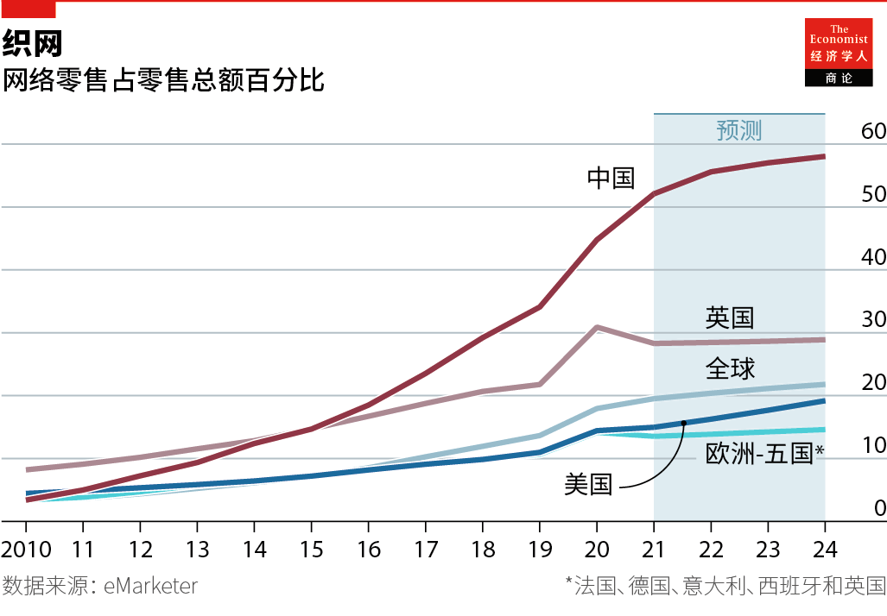

2021-03-31T02:53:43+00:00
购物的未来
一对一商务
本专栏作者亨利·特里克斯（Henry Tricks）观察认为，自工业革命以来购物从未发生过如此剧变【专题报道《购物的未来》系列之一】

一九六六年，耐克有史以来第一位全职员工杰夫·约翰逊（Jeff Johnson）在加州圣塔莫尼卡创建了公司的第一家门店。根据耐克的联合创始人菲尔·奈特（Phil Knight）在其回忆录《鞋狗》（Shoe Dog）中的记述，这家店成了跑步者的“至圣之地”。约翰逊是个书痴，店铺里摆放着几架子他认为跑步者应该看的书。墙上贴着跑步者和耐克的运动鞋（当时还是它代理销售的“鬼塚虎”）的照片。约翰逊为每位客户创建了卡片档案，记录下他们的鞋子尺码等。他会给他们寄圣诞贺卡，在他们赢得了大赛时寄去贺信。许多人回信寻求约翰逊的支持和建议，他会一一回复，尤其是涉及运动损伤的话题。
当笔者向现任耐克公司消费者和市场部负责人海蒂·奥尼尔（Heidi O’Neill）讲述这个故事时，她“起了一身鸡皮疙瘩”。她说，这让她回想起很多年前奈特和他的同事们奋力让公司起步时的艰苦岁月，那会儿鞋是一次一双地卖出去的。她说，几十年后，耐克的生意依赖迅速扩张的批发业务，已经无法复制这种亲密的一对一客户关系了。然而，自2017年以来，公司开始与包括全球最大的在线零售商亚马逊在内的许多批发商切断联系，以专注于成为一家“直接面向消费者”（direct-to-consumer ，简称DTC）的公司。DTC业务现在占到耐克收入的40%。奥尼尔说，自家顾客对数字技术的使用让耐克得以重塑了这个神圣的“一对一世界”。
“一对一”就概括了当下购物世界发生的剧变。消费者从来没有像今天这样，有那么多的东西可以买，又有那么多的途径可以买。利用社交媒体、即时消息和手机应用的新型交流拉近了生产者和消费者之间的距离。运用海量数据的制造商比以往任何时候都更了解客户的需求。他们的产品可以被直接递送到家门口。几个世纪以来不断添加隐性成本的传统中介商正在被排挤出局。
这一点在新冠疫情期间尤为明显，因为电子商务的渗透率在短短几个月内就达到了原本预计还需要几年才会达到的水平。在封锁和社交隔离措施的限制下，美国和欧洲的实体零售商去年延续长期趋势成批关门，但线上平台却异常红火。亚马逊在2020年第四季度的营收首次突破1000亿美元。一些中国电商巨头的股价飙升了一倍甚至两倍。
DTC业务蓬勃发展。封锁初期，耐克实现了它最初为2023年设定的目标，有三成产品在网上卖出。过去一年中，这家公司的“会员”增加了7000万人，总数达到2.5亿。它通过应用与这些忠实客户连接，提供从免费跑步指导到使用跑鞋自动贩售机的各种福利。
超市此前曾祈祷距大规模转移线上尚有五年之遥，却猛然发现爷爷奶奶们也都学会了在网上买菜和预定送货时间等黑魔法。封锁初期需求的飙升甚至让英国在线杂货商Ocado一度以为自己被黑客攻击了。
但是，电子商务的爆炸式增长并不预示着实体商店的死亡。封锁解除后，购物者又纷纷涌回商业街和大型购物中心。甚至像耐克这样的数字布道者去年都在巴黎香榭丽舍大道上开出了一家“交互式”旗舰店，这是它近年开设的零星几家新店之一。疫情控制住后，电子商务的增速将放缓。正如投资公司盛博的马克·谢穆里克（Mark Shmulik）所说，几代购物者的“肌肉记忆”不会在一夜间消失。
但数据驱动的购物剧变势不可挡。它将改变商店的性质——使实体和数字购物无缝交互。这将颠覆营销，因为在线广告比任何广播广告或广告牌都能更精准地定向投放。这也将催生新的生产形式。耐克就是一个例子。得益于其应用和交互式门店，它可以从它那些在路边慢跑的客户那里获取大量实时数据。奥尼尔指出，当公司注意到它应用上的流量显示越来越多人在做瑜伽时，它迅速生产出了新的瑜伽装备。约翰逊若知道这些应该会很高兴的。
革命时期
要了解这样一种转变的历史重要性，让我们从16世纪的英格兰说起。正如曾为本刊撰稿的多萝西·戴维斯（Dorothy Davis）在写于1960年代的《购物史》（A History of Shopping）一书中解释的那样，第一次零售革命发生在伊丽莎白时代，此前与顾客一对一交易的工匠开设了第一批商店来兜售其他人制作的手工艺品，赚取中介费用。
几个世纪后发生的工业革命带来了第二次零售业大转型。这是一个由工厂生产商品的新体系，越来越多的工人阶级购物者能够买得起这些东西。在大量广告的支持下，这些商品由店铺分销，而店铺扩大规模以受益于规模经济。今天的许多人都很熟悉这种模式：批量生产满足群体消费。
第三次零售革命，亦即今天的数字时代，颠覆了这种模式。用零售商的行话来说，它创建了一个消费者“拉取”，而非生产者“推动”的体系。纽约哥伦比亚大学商学院的零售学系主任马克·科恩（Mark Cohen）说：“在20世纪初，商业的总指挥是零售商，制造商是它平等的合作伙伴。今天，总指挥是顾客。”
在西方，这种剧变引发了恐惧。那是因为零售基础设施并不是为数字时代而建的。据盛博统计，美国的人均零售面积为24平方英尺，是英国的三倍，中国的六倍。数据公司Coresight Research表示，去年美国有8700多家门店关闭。据英国零售研究中心（Centre for Retail Research）估计，在英国有1.6万家店铺关门，18.3万个零售职位流失。耐克，不好意思，但受灾最严重的部门之一就是服饰鞋类。那些新开的店多是折扣店。
然而在亚洲部分地区，这却是一个繁荣期。中国热情拥抱电子商务是一些因素的综合结果：智能手机普及、在大城市以外的地区有吸引力的购物中心不多，以及城市人口密度高降低了送货成本。但是，中国也在某种没人曾预料到的创新上脱颖而出，例如网红直播卖口红。和耐克一样，一些中国的科技公司正在利用人们的数字化足迹来改变产品的生产方式，甚至以高科技方式提高农场的果蔬产量。
但即使在中国，最终的目标也不是跨过门店。中国最大的电子商务公司阿里巴巴已在它开设在最大城市的超市中推出了最新的数字技术，例如无人商店和视频促销。和紧随其后的竞争对手京东和拼多多一样，它在最偏远的村庄与食品杂货店合作，把商品分销变得更便宜和高效。咨询公司麦肯锡的丹尼尔·齐普瑟（Daniel Zipser）表示，去年在中国新开张了374座大型购物中心。城市中心区域零售物业的价格没有显现出有统计意义的跌幅。
在东西方，这种线下和线上世界的融合都被广泛称为“全渠道”。这也许是影响购物的未来的最明显趋势。这一未来将是线上和线下并行的。
对消费者而言，好处是显而易见的。他们可以视心情和实际情形来选择去商店或网购，这给他们提供了更大的便利。但对零售商来说，挑战是巨大的。它们不仅要负担门店成本，还要支付数字“租金”来在Facebook等网络搜索渠道上突出显示自家商品；不仅要承担送货成本，还要提供让顾客到门店自提的选择。大型在线平台Shopify表示，它们还面对处理堆积如山的退货这个日益扩大的噩梦，这个部分如今给全球零售商造成的损失每年超过一万亿美元。寻找到让全渠道模式更有利可图的方法是一大挑战。
这种模式可能会变得更赚钱，完全是考虑到可供征服的市场还很庞大。据科技业简报作者贝内迪克特·埃文斯（Benedict Evans）称，2019年全球电子商务销售额约为4万亿美元。这还不到零售总额的五分之一，在整个消费者支出中的占比更小——世界银行估计消费者支出总额达65万亿美元。尚有几十万亿美元的支出可供争抢。
不过，人们已经越来越担心少数巨头会抢占其中的大头，比如在美洲、欧洲和亚洲部分地区运营的亚马逊以及中国的阿里巴巴。美国、欧盟和中国的监管机构正在审查行业领头羊。为使未来的复兴不会成为某种数字专制，本专题报道将评估创业者如何能够挑战甚至战胜数字在位者的霸权。
在疫情中，商店纷纷关门歇业，亚马逊源源不断的包裹淹没了家门口的台阶。看起来，世界似乎行走在某种数字废托邦的边缘——商店逐渐丧失了社交、玩乐和救济慰藉孤独者的古老功能。但这种视角太过悲观了。即使是从伊丽莎白时代的英国穿越而来的人，也能在未来的商业中认出很多东西。正如本报道将论证的那样，行贩、商贾、食摊、手工艺品、推销员和主顾都将继续存在——尽管是以新的形式。最大的不同将在于市场，这个由技术巨头主导的数字架构将在从今往后支撑我们挥霍的欲望。
2021-03-31T02:53:43+00:00
The future of shopping
One-to-one commerce
Not since the Industrial Revolution has shopping been in such upheaval, writes Henry Tricks

IN 1966 JEFF JOHNSON, Nike’s first-ever full-time employee, created the company’s first store in Santa Monica, California. As Phil Knight, Nike’s co-founder, recounts in his memoir, “Shoe Dog”, it became a “holy of holies” for runners. Mr Johnson was a bookworm, so the shop had shelves of books that he felt runners should read. Pinned to the walls were photos of runners and of Nike’s sneakers, then called Tigers. Mr Johnson kept card files of each customer, including their shoe sizes. He sent them Christmas cards and congratulatory notes if they won a big race. Many wrote back seeking Mr Johnson’s support and advice, which he gave, especially when it came to injuries.
When your correspondent told this story to Heidi O’Neill, now head of Nike’s consumer and marketplace division, she got “goosebumps”. It recalled a time, she said, when Mr Knight and his colleagues, struggling to get the business off the ground, put shoes on the feet of one runner at a time. For decades afterwards, she says, Nike was unable to replicate the intimacy of this one-to-one customer relationship, as it relied on rapid expansion of its wholesale business. Yet since 2017 the firm has been cutting the cord with many of its wholesalers, including Amazon, the world’s biggest online retailer, to focus on becoming a “direct-to-consumer” (DTC) company. DTC now accounts for 40% of Nike’s revenues. Its shoppers’ use of digital technology has enabled Nike to recreate that hallowed “one-to-one world”, says Ms O’Neill.
One-to-one is shorthand for today’s upheaval in the world of shopping. The consumer has never had so many things to buy, or ways to buy them. New forms of communication via social media, messaging services and apps have brought producers and consumers closer together. Using trillions of gigabytes of data, manufacturers know better than ever what customers want. Their products can be delivered direct to the doorstep. The traditional middleman, who for centuries piled hidden cost on hidden cost, is being squeezed out.
This has been especially visible during the covid-19 pandemic, as e-commerce penetration has in just a few months reached levels that had been expected to take years. Amid lockdowns and social-distancing measures, bricks-and-mortar retailers went bust in droves last year in America and Europe, continuing a long trend. Yet online platforms have thrived. Amazon exceeded $100bn in quarterly revenues for the first time in the fourth quarter of 2020. The share prices of some Chinese e-commerce giants doubled and even tripled.
DTC businesses have flourished. Early on in lockdown, Nike hit a target, which was originally set for 2023, of selling 30% of its goods online. Over the past year 70m people have become “members”, bringing the total to 250m. It connects to these loyal customers via apps offering everything from free running guidance to access to sneaker vending-machines.
Supermarkets, which had earlier hoped that a mass stampede online was still five years away, suddenly found that even grandparents were mastering the dark arts of ordering groceries and booking slots. Such was the surge in demand in the early days of lockdown that Ocado, a British online grocer, thought for a while that it was under cyber-attack.

The e-commerce explosion does not herald the death of the physical store, however. When lockdowns have been lifted, shoppers have flocked back to high streets and shopping malls. Even a digital evangelist like Nike inaugurated a flagship “interactive” store on Paris’s Champs-Elysées last year, one of several new stores it has recently opened. After covid-19 is tamed, the pace of e-commerce growth will moderate. As Mark Shmulik of Bernstein, an investment firm, puts it, generations of shoppers’“muscle memories” will not vanish overnight.
Yet the data-driven shopping upheaval is unstoppable. It will change the nature of stores, so that physical and digital shopping seamlessly interact. It will disrupt marketing, because online ads target shoppers more accurately than any broadcast jingle or billboard. And it will lead to new forms of production. Nike offers an example. Thanks to its apps and interactive shops, it acquires reams of real-time data from its pavement-pounding customers. When it noticed that traffic on its apps was showing more people doing yoga, it swiftly produced new yoga gear, Ms O’Neill notes. Mr Johnson would have been delighted.
Revolutionary days
To understand the historic importance of such a shift, start in 16th-century England. As Dorothy Davis, a former
Centuries later came the Industrial Revolution, which led to the second big retail transformation. This was a new system of factory-produced goods that a growing number of working-class shoppers could afford. Supported by a blitz of advertising, these goods were distributed by shops that grew in size to benefit from economies of scale. The set-up is familiar to many today: mass production supports mass consumption.
The third retail revolution, today’s digital age, turns that model on its head, creating, in retailers’ jargon, a consumers’“pull” system rather than a producers’“push” one. As Mark Cohen, director of retail studies at Columbia University Graduate School of Business in New York, says: “At the turn of the 20th century, the commander-in-chief of commerce was the retailer, with the manufacturer as equal partner. Today it’s the customer who’s in charge.”
In the West, this upheaval causes trepidation. That is because the retail infrastructure was not built for the digital age. America has 24 square feet of retail space per person, according to Bernstein, three times as much as Britain and six times as much as China. In America more than 8,700 stores closed last year, says Coresight Research, a data firm. In Britain 16,000 stores shut and 183,000 retail jobs were lost, estimates the Centre for Retail Research.
In parts of Asia, however, this is a time of exuberance. China’s embrace of e-commerce reflects the ubiquity of smartphones, the shortage of attractive shopping centres beyond the big cities, and high urban density, which cuts the cost of delivery. Yet China also stands out for a level of innovation, such as live-streaming by celebrity lipstick-sellers, that few saw coming. Like Nike, some Chinese tech firms are taking advantage of people’s digital trail to change the way goods are produced—and even to produce high-tech ways to improve fruit and vegetable yields on farms.
Yet even in China, the ultimate goal is not to leapfrog the store. Alibaba, China’s biggest e-commerce firm, has brought the latest digital razzmatazz, such as cashier-free shops and video promotions, to its supermarkets in the biggest cities. Along with JD.com and Pinduoduo, its closest rivals, it is working with grocery shops in the farthest-flung villages to make distribution of goods cheaper and more efficient. Daniel Zipser of McKinsey, a consultancy, says 374 large malls were opened in China last year. Prices for retail property in city centres have shown no meaningful fall.
In both East and West, such an amalgamation of the offline and online worlds is widely referred to as “omnichannel”. This is perhaps the most tangible trend affecting the future of shopping. The future will be both online and offline.
For consumers the benefits are obvious. They will gain greater convenience from being able to shop either physically or virtually, depending on their mood and circumstances. But for retailers, the challenges are immense. They have to pay not only for the costs of their stores but also for a form of digital “rent” to display their goods high up on online search channels such as Facebook. They must not only pay for delivery but also allow customers to pick goods up in their shops. And they face a growing nightmare of processing returns that now cost retailers more than $1trn globally every year, says Shopify, a big online platform. The struggle will be to find ways to make omnichannel more profitable.
It may yet become more lucrative simply because of the sheer size of the market left to conquer. According to Benedict Evans, who writes a tech newsletter, e-commerce sales globally in 2019 amounted to some $4trn. That was less than a fifth of total retail sales, and a smaller fraction of overall consumer spending, which the World Bank estimates at $65trn. There are tens of trillions of dollars of extra spending left to battle over.
Yet concerns are already growing that a few behemoths, such as Amazon in America, Europe and parts of Asia, and Alibaba in China, will hog the bulk of that. Regulators in America, the European Union and China are keeping the industry leaders under scrutiny. To keep the future a renaissance not a digital autocracy, this report assesses how entrepreneurs can stand up to and even overcome the supremacy of the digital incumbents.
In the midst of the covid-19 pandemic, with shops shut and doorsteps under siege from the latest Amazon delivery, the world may seem to be on the edge of a digital dystopia, with shops losing their age-old role as a place of social interaction, banter and succour for the lonely. But that is too pessimistic. Even a time traveller from Elizabethan England would find a lot to recognise in the commerce of the future. As this report will argue, the itinerant peddlers, merchants, food stalls, crafts, salespeople and shoppers will all continue to exist—albeit in new forms. The biggest difference will be the marketplace, the digital architecture dominated by the tech giants that in future will underpin our urge to splurge. ■
2021-03-31T02:53:43+00:00
購物的未來
一對一商務
本專欄作者亨利·特里克斯（Henry Tricks）觀察認為，自工業革命以來購物從未發生過如此劇變【專題報道《購物的未來》系列之一】
一九六六年，耐克有史以來第一位全職員工傑夫·約翰遜（Jeff Johnson）在加州聖塔莫尼卡創建了公司的第一家門店。根據耐克的聯合創始人菲爾·奈特（Phil Knight）在其回憶錄《鞋狗》（Shoe Dog）中的記述，這家店成了跑步者的“至聖之地”。約翰遜是個書痴，店鋪里擺放着幾架子他認為跑步者應該看的書。牆上貼着跑步者和耐克的運動鞋（當時還是它代理銷售的“鬼塚虎”）的照片。約翰遜為每位客戶創建了卡片檔案，記錄下他們的鞋子尺碼等。他會給他們寄聖誕賀卡，在他們贏得了大賽時寄去賀信。許多人回信尋求約翰遜的支持和建議，他會一一回復，尤其是涉及運動損傷的話題。
當筆者向現任耐克公司消費者和市場部負責人海蒂·奧尼爾（Heidi O’Neill）講述這個故事時，她“起了一身雞皮疙瘩”。她說，這讓她回想起很多年前奈特和他的同事們奮力讓公司起步時的艱苦歲月，那會兒鞋是一次一雙地賣出去的。她說，幾十年後，耐克的生意依賴迅速擴張的批發業務，已經無法複製這種親密的一對一客戶關係了。然而，自2017年以來，公司開始與包括全球最大的在線零售商亞馬遜在內的許多批發商切斷聯繫，以專註於成為一家“直接面向消費者”（direct-to-consumer ，簡稱DTC）的公司。DTC業務現在佔到耐克收入的40%。奧尼爾說，自家顧客對數字技術的使用讓耐克得以重塑了這個神聖的“一對一世界”。
“一對一”就概括了當下購物世界發生的劇變。消費者從來沒有像今天這樣，有那麼多的東西可以買，又有那麼多的途徑可以買。利用社交媒體、即時消息和手機應用的新型交流拉近了生產者和消費者之間的距離。運用海量數據的製造商比以往任何時候都更了解客戶的需求。他們的產品可以被直接遞送到家門口。幾個世紀以來不斷添加隱性成本的傳統中介商正在被排擠出局。
這一點在新冠疫情期間尤為明顯，因為電子商務的滲透率在短短几個月內就達到了原本預計還需要幾年才會達到的水平。在封鎖和社交隔離措施的限制下，美國和歐洲的實體零售商去年延續長期趨勢成批關門，但線上平台卻異常紅火。亞馬遜在2020年第四季度的營收首次突破1000億美元。一些中國電商巨頭的股價飆升了一倍甚至兩倍。
DTC業務蓬勃發展。封鎖初期，耐克實現了它最初為2023年設定的目標，有三成產品在網上賣出。過去一年中，這家公司的“會員”增加了7000萬人，總數達到2.5億。它通過應用與這些忠實客戶連接，提供從免費跑步指導到使用跑鞋自動販售機的各種福利。
超市此前曾祈禱距大規模轉移線上尚有五年之遙，卻猛然發現爺爺奶奶們也都學會了在網上買菜和預定送貨時間等黑魔法。封鎖初期需求的飆升甚至讓英國在線雜貨商Ocado一度以為自己被黑客攻擊了。
但是，電子商務的爆炸式增長並不預示着實體商店的死亡。封鎖解除後，購物者又紛紛涌回商業街和大型購物中心。甚至像耐克這樣的數字佈道者去年都在巴黎香榭麗舍大道上開出了一家“交互式”旗艦店，這是它近年開設的零星幾家新店之一。疫情控制住後，電子商務的增速將放緩。正如投資公司盛博的馬克·謝穆里克（Mark Shmulik）所說，幾代購物者的“肌肉記憶”不會在一夜間消失。
但數據驅動的購物劇變勢不可擋。它將改變商店的性質——使實體和數字購物無縫交互。這將顛覆營銷，因為在線廣告比任何廣播廣告或廣告牌都能更精準地定向投放。這也將催生新的生產形式。耐克就是一個例子。得益於其應用和交互式門店，它可以從它那些在路邊慢跑的客戶那裡獲取大量實時數據。奧尼爾指出，當公司注意到它應用上的流量顯示越來越多人在做瑜伽時，它迅速生產出了新的瑜伽裝備。約翰遜若知道這些應該會很高興的。
革命時期
要了解這樣一種轉變的歷史重要性，讓我們從16世紀的英格蘭說起。正如曾為本刊撰稿的多蘿西·戴維斯（Dorothy Davis）在寫於1960年代的《購物史》（A History of Shopping）一書中解釋的那樣，第一次零售革命發生在伊麗莎白時代，此前與顧客一對一交易的工匠開設了第一批商店來兜售其他人製作的手工藝品，賺取中介費用。
幾個世紀後發生的工業革命帶來了第二次零售業大轉型。這是一個由工廠生產商品的新體系，越來越多的工人階級購物者能夠買得起這些東西。在大量廣告的支持下，這些商品由店鋪分銷，而店鋪擴大規模以受益於規模經濟。今天的許多人都很熟悉這種模式：批量生產滿足群體消費。
第三次零售革命，亦即今天的數字時代，顛覆了這種模式。用零售商的行話來說，它創建了一個消費者“拉取”，而非生產者“推動”的體系。紐約哥倫比亞大學商學院的零售學系主任馬克·科恩（Mark Cohen）說：“在20世紀初，商業的總指揮是零售商，製造商是它平等的合作夥伴。今天，總指揮是顧客。”
在西方，這種劇變引發了恐懼。那是因為零售基礎設施並不是為數字時代而建的。據盛博統計，美國的人均零售面積為24平方英尺，是英國的三倍，中國的六倍。數據公司Coresight Research表示，去年美國有8700多家門店關閉。據英國零售研究中心（Centre for Retail Research）估計，在英國有1.6萬家店鋪關門，18.3萬個零售職位流失。耐克，不好意思，但受災最嚴重的部門之一就是服飾鞋類。那些新開的店多是折扣店。
然而在亞洲部分地區，這卻是一個繁榮期。中國熱情擁抱電子商務是一些因素的綜合結果：智能手機普及、在大城市以外的地區有吸引力的購物中心不多，以及城市人口密度高降低了送貨成本。但是，中國也在某種沒人曾預料到的創新上脫穎而出，例如網紅直播賣口紅。和耐克一樣，一些中國的科技公司正在利用人們的數字化足跡來改變產品的生產方式，甚至以高科技方式提高農場的果蔬產量。
但即使在中國，最終的目標也不是跨過門店。中國最大的電子商務公司阿里巴巴已在它開設在最大城市的超市中推出了最新的數字技術，例如無人商店和視頻促銷。和緊隨其後的競爭對手京東和拼多多一樣，它在最偏遠的村莊與食品雜貨店合作，把商品分銷變得更便宜和高效。諮詢公司麥肯錫的丹尼爾·齊普瑟（Daniel Zipser）表示，去年在中國新開張了374座大型購物中心。城市中心區域零售物業的價格沒有顯現出有統計意義的跌幅。
在東西方，這種線下和線上世界的融合都被廣泛稱為“全渠道”。這也許是影響購物的未來的最明顯趨勢。這一未來將是線上和線下並行的。
對消費者而言，好處是顯而易見的。他們可以視心情和實際情形來選擇去商店或網購，這給他們提供了更大的便利。但對零售商來說，挑戰是巨大的。它們不僅要負擔門店成本，還要支付數字“租金”來在Facebook等網絡搜索渠道上突出顯示自家商品；不僅要承擔送貨成本，還要提供讓顧客到門店自提的選擇。大型在線平台Shopify表示，它們還面對處理堆積如山的退貨這個日益擴大的噩夢，這個部分如今給全球零售商造成的損失每年超過一萬億美元。尋找到讓全渠道模式更有利可圖的方法是一大挑戰。
這種模式可能會變得更賺錢，完全是考慮到可供征服的市場還很龐大。據科技業簡報作者貝內迪克特·埃文斯（Benedict Evans）稱，2019年全球電子商務銷售額約為4萬億美元。這還不到零售總額的五分之一，在整個消費者支出中的佔比更小——世界銀行估計消費者支出總額達65萬億美元。尚有幾十萬億美元的支出可供爭搶。
不過，人們已經越來越擔心少數巨頭會搶佔其中的大頭，比如在美洲、歐洲和亞洲部分地區運營的亞馬遜以及中國的阿里巴巴。美國、歐盟和中國的監管機構正在審查行業領頭羊。為使未來的復興不會成為某種數字專制，本專題報道將評估創業者如何能夠挑戰甚至戰勝數字在位者的霸權。
在疫情中，商店紛紛關門歇業，亞馬遜源源不斷的包裹淹沒了家門口的台階。看起來，世界似乎行走在某種數字廢托邦的邊緣——商店逐漸喪失了社交、玩樂和救濟慰藉孤獨者的古老功能。但這種視角太過悲觀了。即使是從伊麗莎白時代的英國穿越而來的人，也能在未來的商業中認出很多東西。正如本報道將論證的那樣，行販、商賈、食攤、手工藝品、推銷員和主顧都將繼續存在——儘管是以新的形式。最大的不同將在於市場，這個由技術巨頭主導的數字架構將在從今往後支撐我們揮霍的慾望。